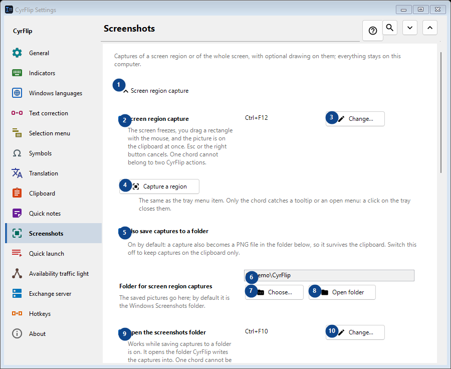
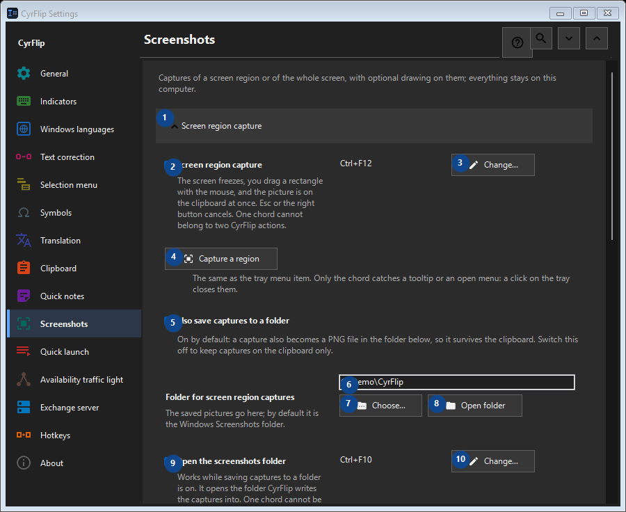

Screenshots
What this is for
Captures of a screen region or of the whole screen, with optional drawing on them; everything stays on this computer.


In this order
Settings apply immediately. There is no required order; use the groups below.
The elements
1. Screen region capture
Use this command when you need the action named above. Review any confirmation before accepting it.
Your shortcuts2. Screen region capture
The screen freezes, you drag a rectangle with the mouse, and the picture is on the clipboard at once. Esc or the right button cancels. One chord cannot belong to two CyrFlip actions.
Your shortcuts3. Change - Screen region capture
Use this command when you need the action named above. Review any confirmation before accepting it.
Your shortcuts4. Capture a region
The same as the tray menu item. Only the chord catches a tooltip or an open menu: a click on the tray closes them.
Your shortcuts5. Also save captures to a folder
On by default: a capture also becomes a PNG file in the folder below, so it survives the clipboard. Switch this off to keep captures on the clipboard only.
Your shortcuts6. Folder for screen region captures
Choose or enter the value for the adjacent label. Review it before continuing.
Your shortcuts7. Choose - Folder for screen region captures
Use this command when you need the action named above. Review any confirmation before accepting it.
Your shortcuts8. Open folder - Folder for screen region captures
Use this command when you need the action named above. Review any confirmation before accepting it.
Your shortcuts9. Open the screenshots folder
Works while saving captures to a folder is on. It opens the folder CyrFlip writes the captures into. One chord cannot be given to two CyrFlip actions.
Your shortcuts10. Change - Open the screenshots folder
Use this command when you need the action named above. Review any confirmation before accepting it.
Your shortcuts11. Full screen capture
Use this command when you need the action named above. Review any confirmation before accepting it.
Your shortcuts12. Full screen capture
One press: every display is captured as one picture, straight to the clipboard. Nothing freezes on the screen.
Your shortcuts13. Change - Full screen capture
Use this command when you need the action named above. Review any confirmation before accepting it.
Your shortcuts14. Capture everything
The same as the tray menu item "Full screen capture".
Your shortcuts15. Draw on screen captures
Use this command when you need the action named above. Review any confirmation before accepting it.
Your shortcuts16. Draw on screen captures
After the capture the frozen picture stays on the screen, ready for your ovals, rectangles, lines and arrows.
Your shortcuts17. Area capture with drawing
Capture a selected region and draw on it. One chord cannot belong to two CyrFlip actions.
Your shortcuts18. Change - Area capture with drawing
Use this command when you need the action named above. Review any confirmation before accepting it.
Your shortcuts19. Full screen capture with drawing
Capture every display as one picture and draw on it. One chord cannot belong to two CyrFlip actions.
Your shortcuts20. Change - Full screen capture with drawing
Use this command when you need the action named above. Review any confirmation before accepting it.
Your shortcuts21. Capture a region and draw
The same as the "area capture with drawing" chord.
Your shortcuts22. Capture everything and draw
The same as the "full screen capture with drawing" chord.
Your shortcuts